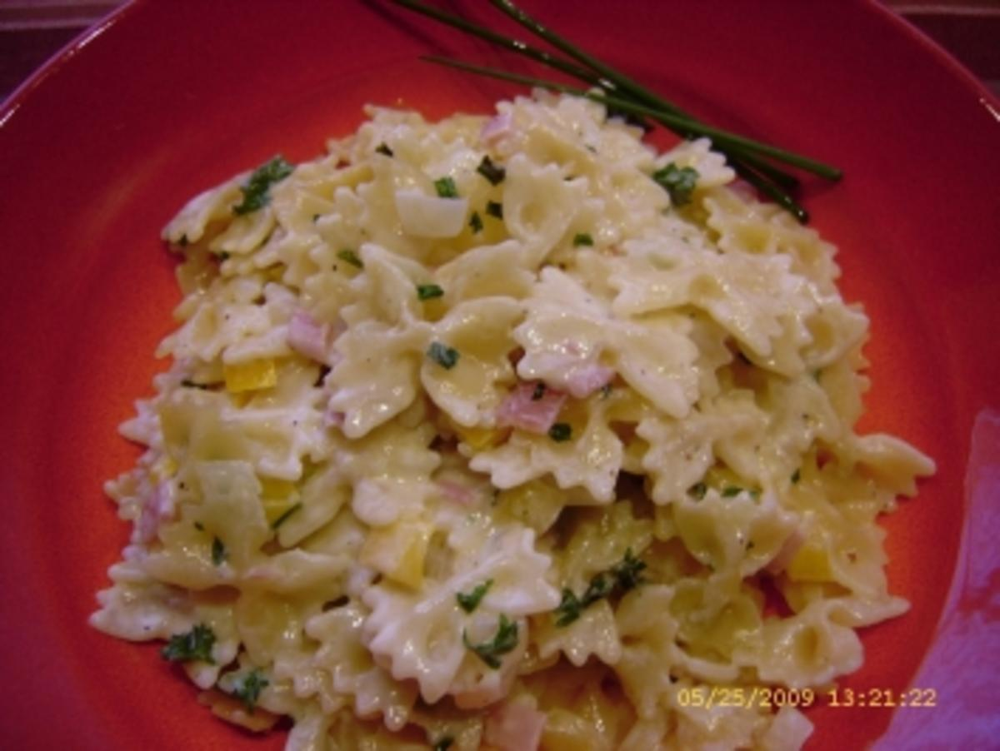

Nudel-Rezept

Zutaten
Nudeln
Passierte Tomaten
Zwiebeln
Zubereitung
Nudeln kochen.
Zwiebeln in Öl anbraten.
Die passierten Tomaten zu den Zwiebeln hinzufügen und 10 Minuten kochen lassen.
Alles zusammen servieren